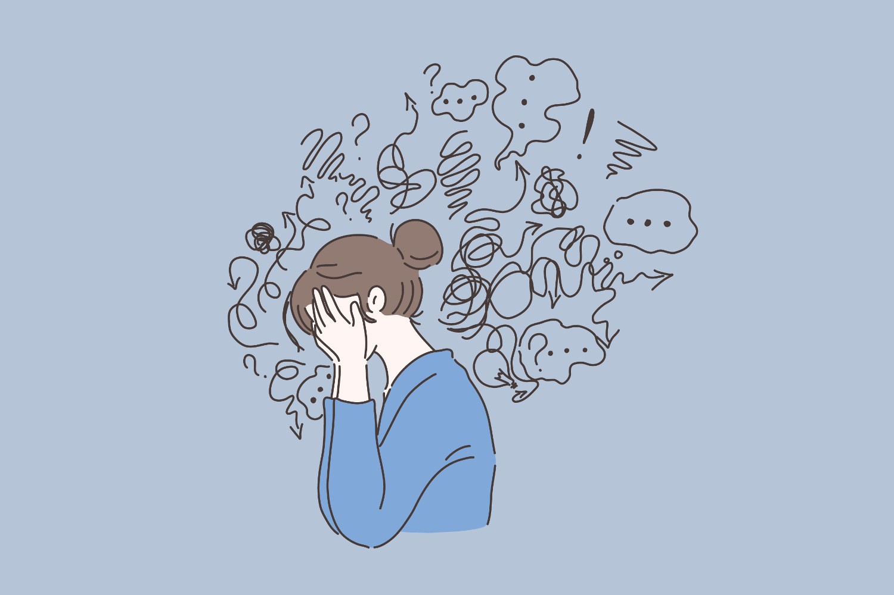
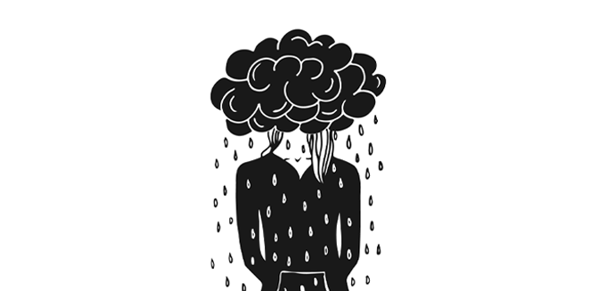
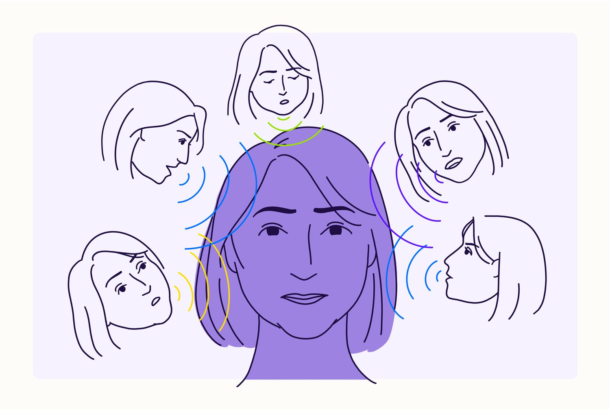

Breaking down the Myths
 UNDERSTANDING THE DIFFERENT KIND OF MENTAL DISORDERS
UNDERSTANDING THE DIFFERENT KIND OF MENTAL DISORDERS
PAGE 1 Understanding this connection is crucial for overall well-being.
Disorders are prevalent in our world, affecting millions of individuals and their familiies. These conflicts encompasses a wide range of physical, mental, and emotional disturbances that can significantly impact a person's well - being.
 
Shedding Light on the Shadows of Depression
PAGE 2 DEPRESSION | , Depression is a complex and debilitating mental health condition that can have far-reaching effects on an individual's life, impacting various aspects such as work, relationships, and physical health. It aims to bring this often-hidden mental health condition into the open, promoting understanding, empathy, and the importance of seeking help. It emphasizes the need for open and supportive discussions about depression and mental health in general.
Understanding the Spectrum of Anxiety
anxiety |
, Understanding the spectrum of anxiety emphasizes the need for personalized care and support to address the diversity of experiences and challenges individuals face. It also underscores the importance of mental health awareness and reducing the stigma associated with seeking help for anxiety-related issues. Every person's experience with anxiety is unique. Some may find themselves at one point on the spectrum, while others may navigate multiple aspects of anxiety simultaneously.
  Unraveling the Complexities of
Unraveling the Complexities of | schizopherenia | .
Emphasizes the intricate nature of this condition and underscores the need for greater awareness, research, and support for individuals living with schizophrenia. It's important to approach this topic with empathy and a focus on reducing the stigma associated with severe mental illnesses like schizophrenia.